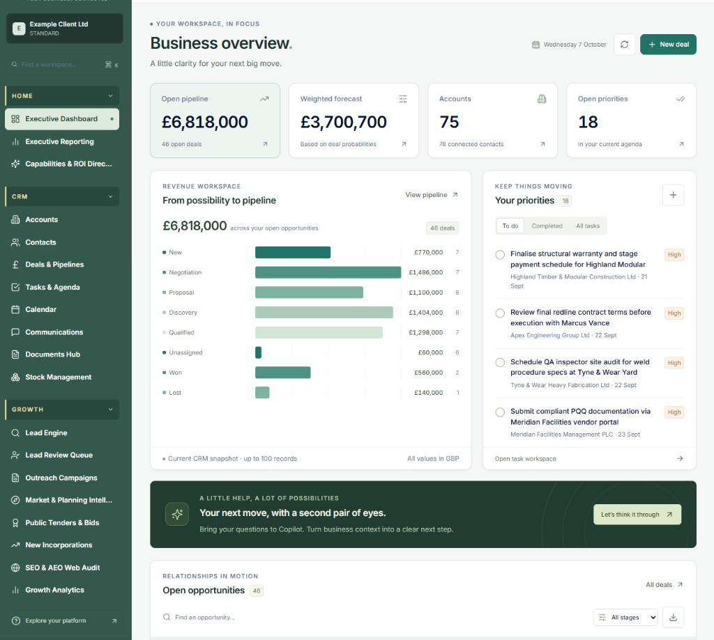
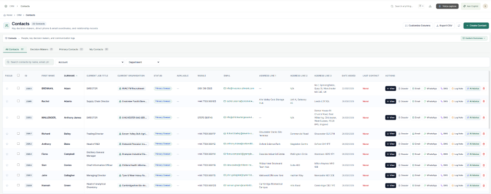
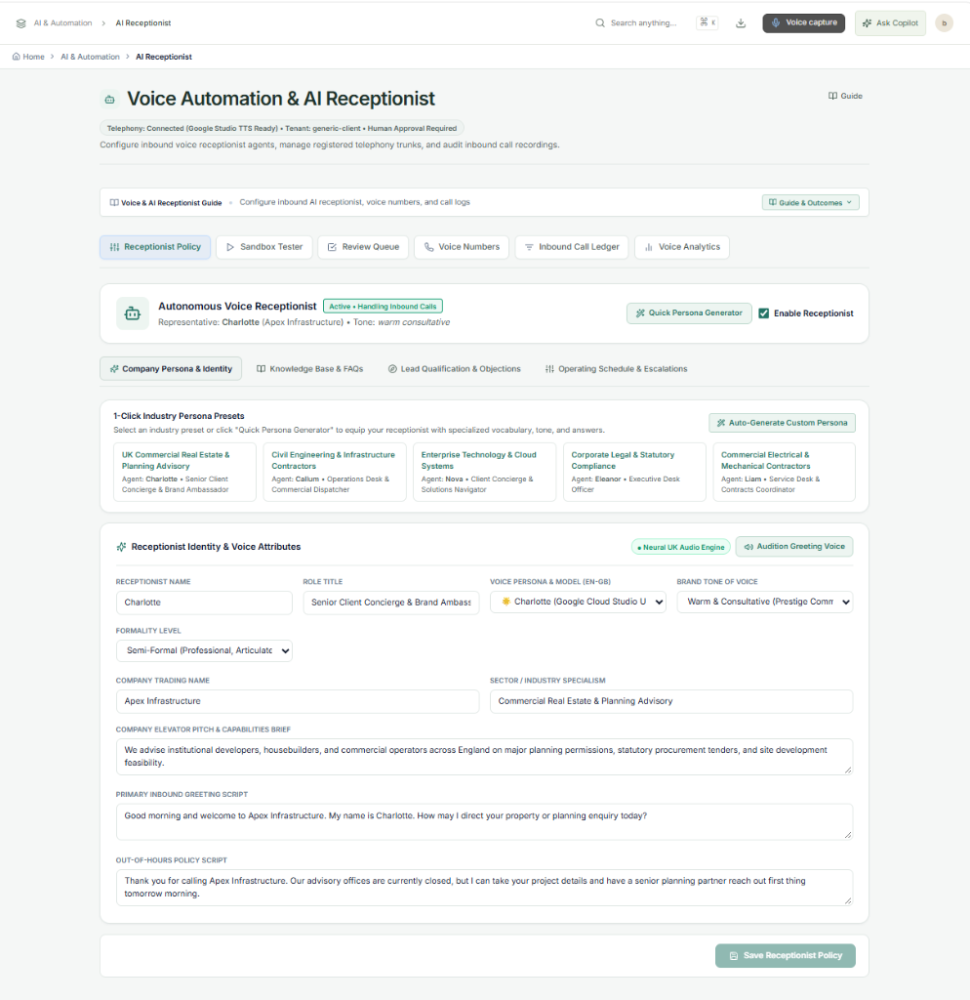

Where is the right talent?
Map relevant employers, roles and talent pools to inform a focused search.
- Talent and employer mapping
- Regional search context
- Candidate pipeline visibility
AI-ENABLED COMMERCIAL INTELLIGENCE
Practical visibility of talent, verified UK decision-makers, and commercial opportunities—powering specialist search and growth partnerships.
Start a conversationSTART WITH THE DECISION
We define what you need to understand, then combine verified registry data, platform capabilities and human judgement.
Map relevant employers, roles and talent pools to inform a focused search.
Research accounts and decision-makers around your target territory.
Bring clearer structure to the activity around your commercial priorities.
LIVE INTELLIGENCE SUITE
Inspect the five core modules of the Power-Up Intelligence platform. Real live software with human oversight at every decision gate.
Live visibility of open commercial pipelines (£6.8M+ tracked in real-time), weighted win probabilities, deal velocity, and priority agendas. Eliminates stale offline spreadsheets.

Direct mobile numbers, corporate emails, and communication logs for managing directors, procurement heads, and branch decision-makers across the UK.

Instant multi-source verification across 5.2M+ UK corporate entities. Live CRN matching, active director filings, SIC classification, and territory filtering.

Autonomous virtual machines and specialist bots governed by an executive approval gate. Human operators can inspect reasoning and 'Take Control' at any moment.

Neural UK voice agent that answers inbound trade counter, branch, and contractor calls 24/7. Transcribes, qualifies intent, and logs actions straight into your CRM.

PRACTICAL BY DESIGN
Focus the conversation on hiring priorities, leadership coverage, margin leakage, and the whitespace opportunities relevant to your growth plan.
Explore target-account research, verified director contacts, local market visibility and practical follow-up workflows.
Explore employer mapping, candidate pipelines and visibility across the search process.
THE NEXT CHAPTER
Tell us what you’re building, where you’re stuck, or who you need.
We’ll start with the right conversation.